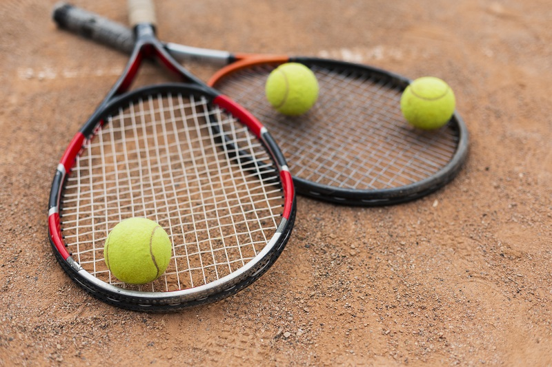
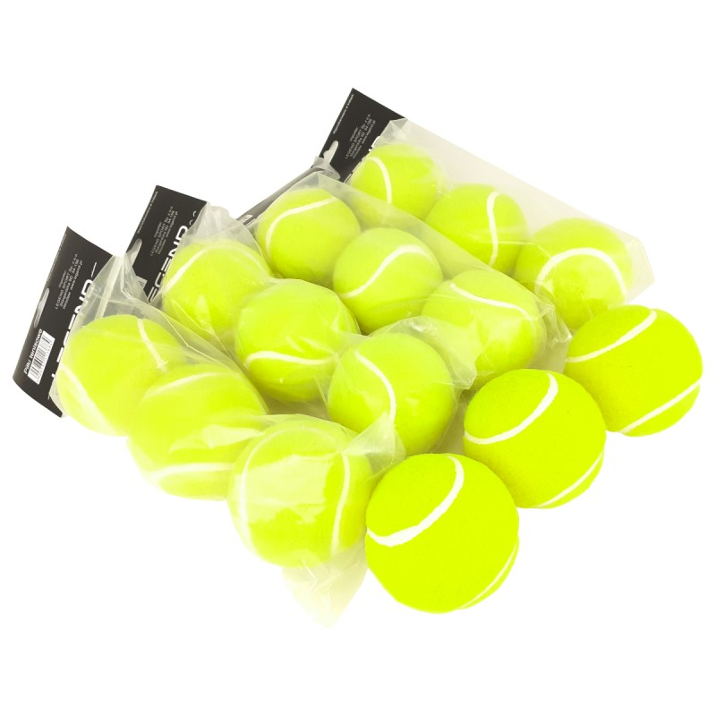
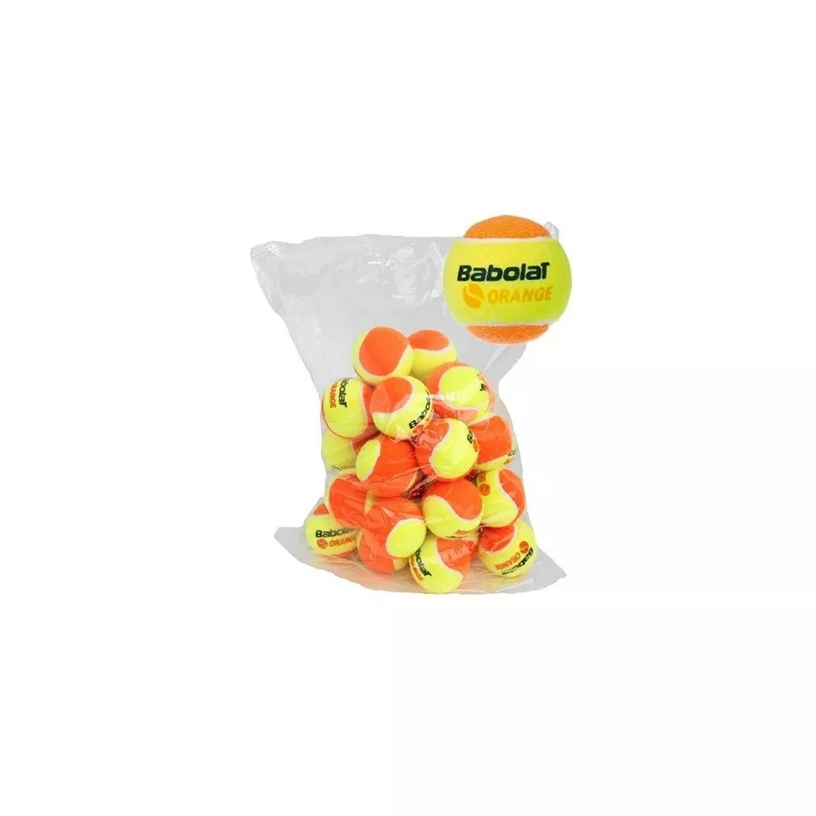

Rekomendowane produkty
Tutaj znajdziesz produkty, które mogą poprawić Twoją grę w tenisa.
Co Warto Kupić, Aby Zacząć Grę w Tenisa
Rozpoczęcie gry w tenisa może być ekscytującą przygodą, ale ważne jest, aby zaopatrzyć się w odpowiedni sprzęt, który pomoże Ci cieszyć się grą i rozwijać swoje umiejętności. Oto lista podstawowych rzeczy, które warto kupić na początek.
1. Rakieta Tenisowa
Najważniejszym elementem wyposażenia tenisisty jest rakieta. Dla początkujących zaleca się rakiety z większą główką (100-110 cali kwadratowych) i średnią wagą (270-300 gramów). Taka rakieta zapewnia większą powierzchnię odbicia i wybacza błędy, co ułatwia naukę.
2. Piłki Tenisowe
Warto zaopatrzyć się w zestaw piłek tenisowych. Początkujący gracze mogą korzystać z piłek o niższym ciśnieniu, które są wolniejsze i łatwiejsze do kontrolowania. Piłki te często mają oznaczenia "Stage 1" są zielone, "Stage 2" są pomarańczowe lub "Stage 3" są czerwone, gdzie "Stage 3" jest najwolniejsza.

3. Odpowiednie Obuwie
Obuwie tenisowe jest kluczowe dla komfortu i bezpieczeństwa na korcie. Buty tenisowe mają specjalnie zaprojektowaną podeszwę, która zapewnia dobrą przyczepność i stabilność. Wybierz buty odpowiednie do nawierzchni kortu, na którym będziesz grać (trawiaste, ziemne, twarde).
4. Odzież Sportowa
Wygodna odzież sportowa jest niezbędna do swobodnego poruszania się po korcie. Wybierz oddychające i elastyczne materiały, które zapewnią komfort podczas gry. Możesz również zaopatrzyć się w specjalne opaski na nadgarstki i czoło, które pomagają w absorpcji potu.
5. Torba na Sprzęt
Dobra torba tenisowa ułatwi transport rakiet, piłek i innych akcesoriów. Wybierz torbę z odpowiednią ilością przegród, aby utrzymać porządek i łatwość dostępu do sprzętu.
6. Akcesoria Dodatkowe
Oprócz podstawowego sprzętu warto zaopatrzyć się w kilka dodatkowych akcesoriów, takich jak:
- Owijki na rakietę: Pomagają w lepszym uchwycie rakiety i zwiększają komfort gry.
- Ochraniacze na naciąg: Chronią naciąg rakiety przed uszkodzeniami.
- Butelka na wodę: Hydratacja jest kluczowa podczas intensywnego wysiłku fizycznego.
- Czapka z daszkiem: Chroni oczy przed słońcem podczas gry na świeżym powietrzu.
7. Lekcje Tenisa
Choć nie jest to przedmiot do kupienia, warto zainwestować w lekcje tenisa u profesjonalnego trenera. Nauka podstawowych technik i strategii gry pod okiem specjalisty pomoże Ci szybciej opanować zasady i cieszyć się grą.
Rozpoczęcie gry w tenisa wymaga odpowiedniego wyposażenia, które zapewni komfort i bezpieczeństwo na korcie. Pamiętaj, aby inwestować w sprzęt dostosowany do Twojego poziomu umiejętności i potrzeb, a przede wszystkim ciesz się grą i rozwijaj swoje umiejętności!